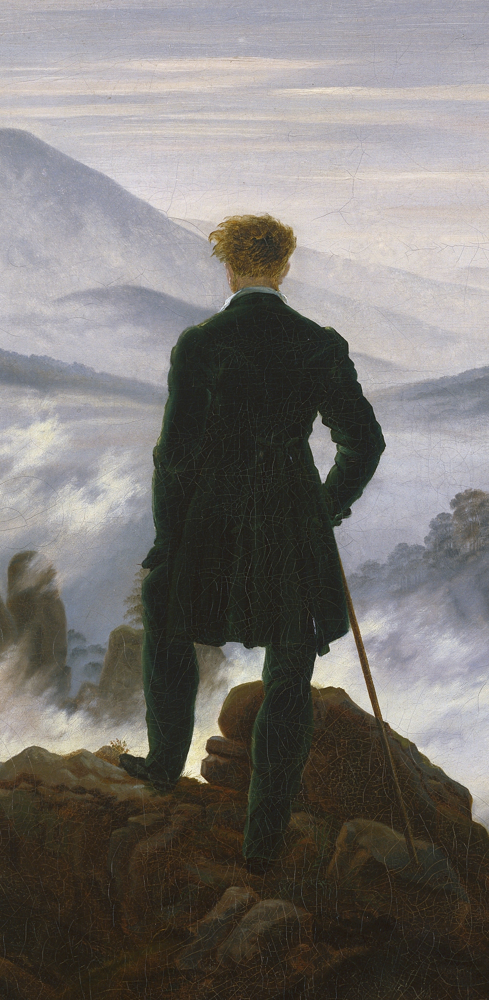
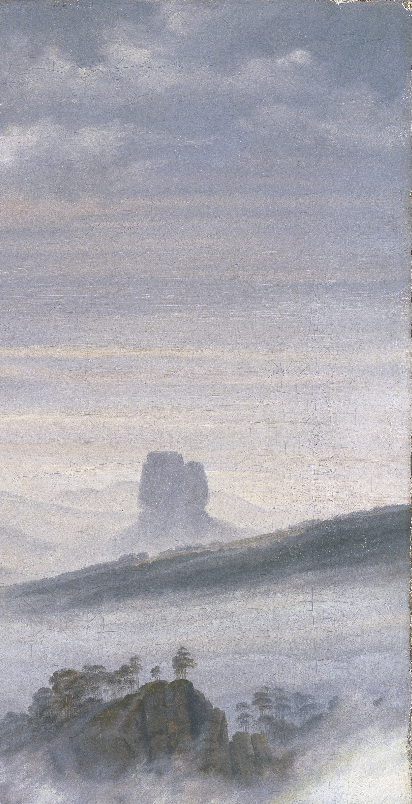
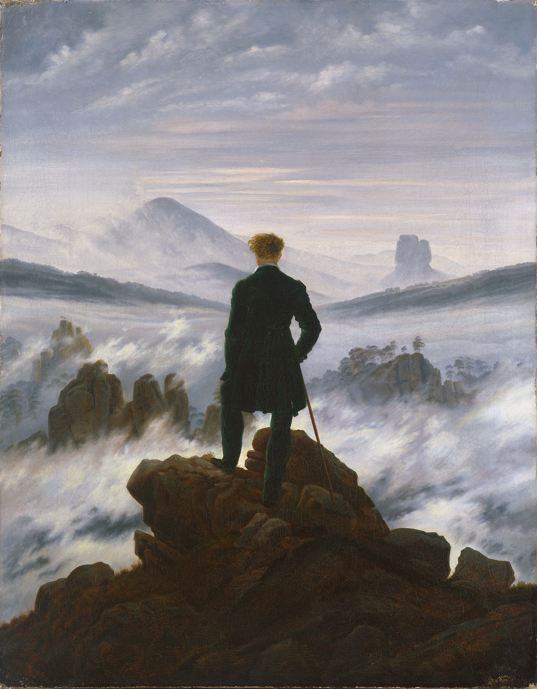
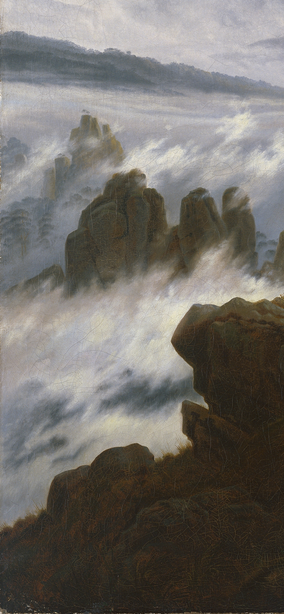

Caspar David Friedrich (1774-1840) è stato il più importante pittore del Romanticismo tedesco. Nato sulle sponde del Mar Baltico, ha trasformato il paesaggio naturale in uno specchio dell'anima umana e del divino. Per Friedrich la natura non è un semplice sfondo decorativo, ma una forza mistica e solenne davanti alla quale l'uomo scopre la propria fragilità e la propria grandezza.
"Il pittore non deve dipingere solo ciò che vede davanti a sé, ma anche ciò che vede dentro di sé."
Realizzato nel 1818, Il viandante sul mare di nebbia (Der Wanderer über dem Nebelmeer) è l'icona universale della sensibilità romantica. Friedrich mette in scena il concetto filosofico di Sublime: quel sentimento travolgente fatto di ammirazione, sgomento e vertigine che l'uomo prova quando si confronta con l'infinito.

La scelta di posizionare il protagonista di spalle (tecnica chiamata Rückenfigur) è il vero colpo di genio dell'opera. Non potendo vedere il suo volto, non siamo portati a guardare "lui", ma siamo costretti a guardare **nella sua stessa direzione**. Il viandante diventa un guscio vuoto dentro il quale noi stessi entriamo, prestandogli i nostri occhi, i nostri pensieri e la nostra solitudine.

Sotto i piedi del viandante si estende un mare che non è fatto d'acqua, ma di vapore denso. La nebbia avvolge le rocce e cancella i dettagli del mondo materiale, lasciando intravedere solo le cime aguzze in lontananza. Questo oceano bianco rappresenta il mistero del futuro, l'ignoto e i dubbi dell'esistenza umana, sospesa tra ciò che è solido e ciò che è passeggero.

L'intera composizione si basa su una geometria rigorosa. Se si tracciassero due diagonali dagli angoli della tela, queste si incrocerebbero esattamente sul cuore dell'uomo. Friedrich usa questa struttura per dirci che l'essere umano, pur essendo infinitamente piccolo rispetto all'universo, è il centro spirituale dell'esperienza della natura. È l'anima del viandante che dà un senso al paesaggio circostante.

Il contrasto cromatico è netto: la roccia in primo piano su cui poggia il viandante è scura, quasi solida e pesante, dipinta con toni bruni e terrosi. Man mano che lo sguardo si sposta verso l'orizzonte, i colori sfumano nel rosa pastello, nel celeste e nel bianco luminoso del cielo. È il cammino simbolico dell'anima, che parte dalle fatiche terrene per elevarsi verso la purezza dell'infinito spirituale.
"Dentro il Quadro - Un viaggio oltre la tela"